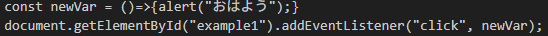

第一章 console.logから始めよう！
あなたはJavaScriptを学び始めましたね？ そんな人が最初にやるのが、console.logというものです。
コンソールにエコーするだけのものを言います。これはPythonでいうprint("おはよう")みたいなものです
プリント文もシステムにエコーするだけです。これは何に使うの？と思ったことはありませんか？
実は、変数に関数や結果の値を入れて、それをプリントするというデバッグの手法で、一個あるんです！
たとえば、ある実行結果の動向を知りたい場合、それを変数hogeに入れて、
ちゃんと処理ができているかを、console.log(hoge)として処理ができているなというのを確認します
そういうためのものなんだ！とびっくりされたでしょう。デバッグの一種なんですね
変数の中身を確認するというわけです。要するに
第二章 簡単なJavaScriptを
簡単なJavaScriptを書いてみましょう

これで、example1というidをつけたところを
クリックすると、おはようとアラートしてくれます。
実際に次の文をクリックしてみてください。
ここをクリック
これでおはようが出ましたか？
という感じで、上のコードの説明をしたいと思います。
まず、constは定数のことです。varもありますが、変更ができてしまうので、
乱用を避けるというのがモダンな書き方です。
そして、そのあとのnewVarは定数名で、ローワーキャメルケースという意味のところで大文字
にするというものです。
そして、アロー関数がきてます。これもモダンな書き方です。これは、無名関数といって、
何も関数名がついてませんよね？その引数を持たないバージョンが今回のです。
なぜ無名関数を使うのか？
これは、関数を一時的に使いたいだけのとき、いちいち定義して呼び出していると、
非常にゴツくなります。わけもわからなくなります。
なので、その場でしか使わない関数を使うために名前のない関数＝無名関数＝アロー関数を使います。
引数は任意で書けるので、nだろうがxだろうが、eだろうが関係ないです。
それでdocumentというのはHTMLのページのことで、getElementByIdはidを設定しておくと、
そこに紐づけるというだけのものです。
どこに紐づいているの？ということがわかりませんよね。
たとえば、今回のように、特定の文字をクリックしたらおはようが出るとか。
それは紐づけないとだめですよね。だからあえてidを設定しまくって、それをJavaScript側で
使えるようにするということが非常に多くあります。あえて設定するのです。使えるように。
それで、addEventListenerでクリックしたら、おはようの関数を呼び出す！
ということをしています。
これはイベントハンドラと言われていて、イベントが起きたら、二個目の引数を実行する
というものです。
これが基本的なJavaScriptのDOMというものです。
DOM？
DOMというのは、Document Object Modelの略で、HTMLのページ＝documentに対して、操作するというものです。
基本的にJavaScriptのみでは、ページにあるものをいじったときに何か起こることはありません。
だから、idをあえて設定して、使えるようにします。
idじゃなくて、classとして設定もできますが、この違いは、idが一回。classがすべて一気にというものです。
さらに、JavaScriptではidを拾うことが基本ですので、idにします。
それを、HTMLのタグに書きます。あえて。
これをゲームにするには、HTML Canvasを使ったりします。
しかし、今回は、JavaScriptの基本構文と操作を勉強する講座です。
なので、割愛します。いつかやるので待っててください。
というわけで、次は・・・。
第三章 JavaScriptの基本文法
JavaScriptでは、変数として、constとvarがあります。
constは定数＝変えれない、varは、変えられるもの＝変数です。
そして、ifとforとwhileなどがあります。
if(a>0){
console.log("おはよう");
}else{
console.log("さようなら");
}
というふうに、書きます。
aという変数が0より大きかったら、おはようを、それ以外はさようならをコンソールに出します。
elseとelse ifがあります。
これは、条件を二個目追加したかったら、else ifとします。
二個目の条件をつけ足すわけですね。
a＞0であり、b＞9とか。そういうわけですね。
しかし、どっちも条件が合う場合と、どっちか合えばいいよねというのがあります。
a＞0であることとb＞9であることを両方満たす場合。
どっちかであればいい場合。
これを一個で完結させるのが、
if(a>0 && b>9){
console.log("おはよう");
}else{
console.log("さようなら");
}
で
if(a>0 || b>9){
console.log("おはよう");
}else{
console.log("さようなら");
}
とがあります。
しかし、条件で弾きたい、分けたい場合は、さっきのelse if を使います。
forとwhile。
for(let i=0; i<3; i++){console.log("おはよう");}
というのがあります。
これは、三回おはようをコンソールに出せというものです。
0スタートなので、何回するかを、<というのの右に書きます。あまり難しく
考えないで、0スタートで、右に回数を書くと覚えてください。
それでも数学の記号がん？だったら、1スタートで、4にしてください。
でもそれは見た時に、何回のイテレーション（回す処理）なの？とわからないですよね。
だから、0スタートで、右に３と書きます。
それでも1スタートがいいんじゃ！という方は、
let i=1; i=<3 ～としてください。
そうすれば、1スタートで、回数もパッと見でわかります。
まあ、あまりやる人はいないけどね。笑
i++というのは、iを処理後に1増やすというものです。
回すから回すものを1ずつ増やすことで、処理をわけています。
あまり深く考えずに、1回1回増やしているんだなと思ってください。
whileというのは、条件に当てはまれば永遠にやるというものです。回数がない、
回数をせっていするのめんどくさい場合に使います。
let a=0;
while(a>5){
console.log("おはよう");
a++;
}
これで、aが6になったら、終わります。for文に似ていますよね。
でも、めんどい場合、回すことをとにかくしたいとき、使います。
例えば、a>5のところを、変数名にしたら、それがTrueで存在し続ける限り・・・となります。
TrueとFalseは、ただのはいかいいえです。
で、ここでletをなぜ使うのか？
スコープというものがあります。変数がどこまで効くかですね。それをはずれると、変数が定義されて
ませんとなります。
それがブロック＝｛｝の部分で再宣言ができないものを、letとします。varは再宣言できます。
その違いです。constでもいいんじゃね？
するどいですね。それだと、定数なので、i++のときに、増えません。変わらないので。
だから、微妙な宣言の仕方をするため、letを使います。
こういうイテレーション（繰り返し処理）でしか、使いません。
それからswitch文もありますが、ほぼ使いません。笑
なので覚えなくていいです。たぶん。
基本文法はifかforまたはwhileでしかないです。
なぜ？
それは、プログラミングというものは、逐次処理・条件分岐・繰り返ししかないからです。
ただの実行の逐次処理は省くとして、条件分岐ifか繰り返しforだけなんです。
それは数学的に証明されてます。だから、あらゆるプログラムはこの組み合わせである。
と覚えてください。
そこで、次の章へ行きましょう。
第四章 配列とオブジェクトについて
配列とオブジェクトがあります。配列と辞書と思ってください。
配列は、let arr=[1, 2, 3];と設定します。
配列とは、集合です。集まりです。ただの。arr[0]から始まり、arr[arr.length-1]で終わります。
上の例では、arr[0], arr[1], arr[2]までです。長さ＝中の数字の数引く１ですよね。
0スタートです。またか！！
そうです！！
arr.lengthって何？arrという配列名の配列の長さですね。何個入ってるの？というものです。
そして、これを不可変にしたかったら、let→constにすればいいのです。
それでオブジェクトって？
辞書です。名前と値を持つものです。
let dic={
name : "Taro",
1 : 1,
2 : 2
}
というものです。辞書ですよね。名前を探してきて、右の値をって感じです。
辞書です。要は。
これで実は、アルゴリズム問題は解けます。今までのことを使えば
二次元配列というものもありますが、それは組み合わせですので、
今までのを組み合わせて中に複雑に絡み合えさせれば、解けます！
ぜひ、Paizaラーニングなどで解いてみてください。
それでは、次は、クロージャとスコープチェーンについて。
第五章 クロージャとスコープチェーンについて
クロージャというのは、関数の中に、関数がreturnで入ってる場合、そこに書かれた
変数の値を常に関数を呼び出すときに使用できるというものです。
つまり、変数の値を関数内に書いておけば、呼び出すときに、そこを必ず参照する
というものです。
function outer() {
let msg = "こんにちは";
return function inner() {
console.log(msg);
};
}
const fn = outer();
fn(); // → "こんにちは"
これは、呼び出すときに、必ずmsgがこんにちはであるということを常に保証してますよね？
その機能や関数をクロージャとかと呼びます。
returnというのは、戻り値で、ただの値をこれですと誰かに渡す際に、何を渡すの？
というものを書いておくものなだけです。
そして、クローズになっているからクロージャです
実は、let msg="こんにちは";のmsgは、外からアクセスできません。
つまり、Javaでいうprivate修飾子なんですね。
ほかの概念で例えるのはどうなんだ？ｗというのはありますが。
よって、クロージャはそういうものだと。
次に、スコープチェーンについて。
スコープチェーンというのは、内側の関数は外側の関数のスコープ内のものならアクセスできるという
ものです。
それは、外側へ外側へあるかないかを判断しながら、チェーン＝鎖のように調べて使う動作をすること
から、スコープチェーンと呼びます。
クロージャに似てないか？
似てますね。
しかし、クロージャはその関数内でしか使えない変数を持った関数のことです。
それで、今回は、探していく動作の仕様のことです。
だから中に複雑に入ってたら、スコープチェーンで外側のスコープ＝変数の効く範囲の中で
変数があるのかないのか探していき、それを実行時に使える関数があるとして、
それ＝関数はクロージャとも呼べます。
仕様＝動作のことか、関数そのもののことか？なだけです。
というわけで、お疲れ様でした。これにて、JavaScriptの基本は終了です。
あとは、非同期処理とメソッドがありますが、それは、別の詳しい本か、リファレンスを
大変でしたね。
長い戦いでした。
それでは最後に、問題を１問だけ解いて終了としましょう！